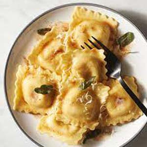
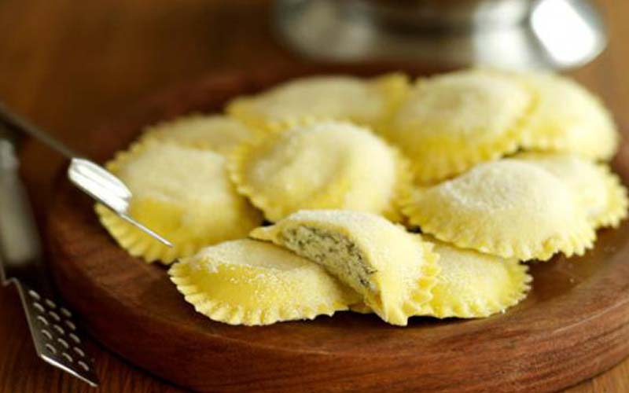

International Dishes Recipe 7:
Raveoli
- Dish Description:
- Ravioli are a type of pasta comprising a filling enveloped in thin pasta dough. Usually served in broth or with a sauce, they originated as a traditional food in Italian cuisine. Ravioli are commonly square, though other forms are also used, including circular and semi-circular (mezzelune). Traditionally, ravioli are made at home. The filling varies according to the area where they are prepared. In Rome and Latium the filling is made with ricotta cheese, spinach, nutmeg and black pepper. In Sardinia, ravioli are filled with ricotta and grated lemon rind. Modern ravioli are also mass-produced by machine.

Ingredients:
- 2 cups all-purpose flour, plus more for dusting
- 1 1/2 teaspoons sea salt
- 3 eggs, plus 1 for the egg wash
- 2 tablespoons olive oil
- Ravioli filling of your choice
Directions:
- In a large bowl whisk together the flour and salt.
- Make a well in the center of the flour and add in the eggs all at once.
- Mix them together well using your hands. Add the olive oil and knead the dough for 5 minutes.
- Form into a ball and leave in the bowl, covered with plastic wrap for 30 minutes.
- Take a small piece of the dough and either run it through a pasta machine a few times OR use a rolling pin, some flour and a considerable amount of muscle to create a thin sheet.
- Cut circles out of the dough using a cookie cutter or a glass.
- Place 1 teaspoon of filling in the center of half the circles.
- Lightly brush egg wash around the edge of the circle. Place the second circle on top over the filling and use a fork to crimp the edges all around.
- Continue with remaining pasta dough until all the dough or filling has been used.
- To cook the pasta, bring a large pot of salted water to a boil. Add ravioli and cook for 2-3 minutes.
- Once they float to the top it is done. Drain pasta and toss with olive oil or sauce.